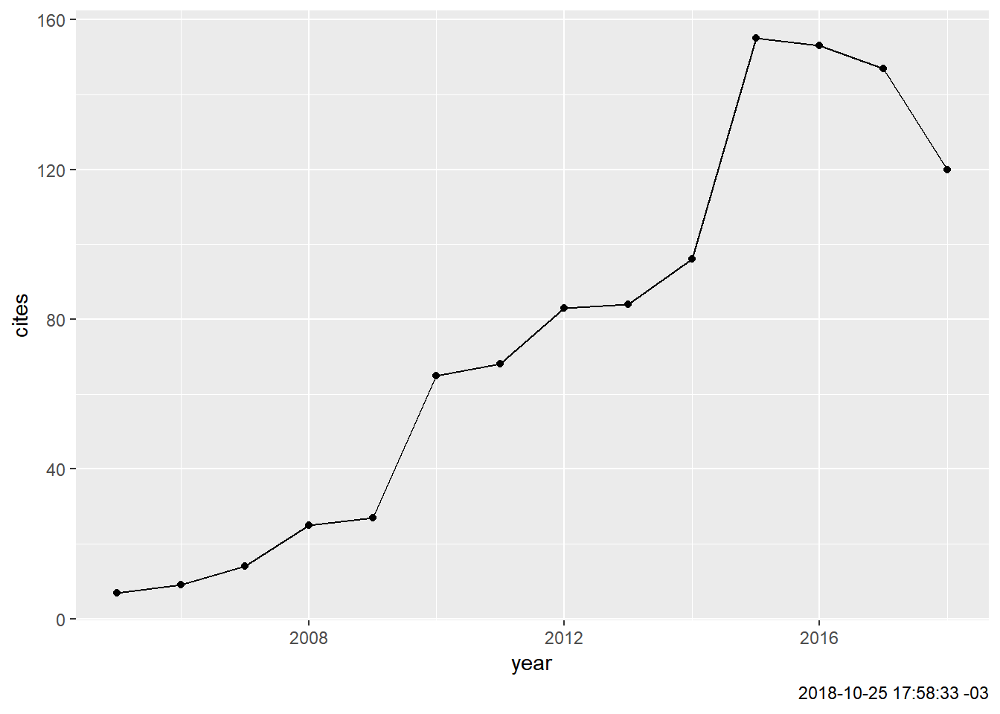

Bibliométrie
Eric Marcon
25 octobre 2018
Abstract
Utilisation de Google Scholar et de Scopus avec R pour analyser les publications d’une structure ou d’un auteur.
1 Google Scholar
Le package scholar permet d’accéder à l’API de Google Scholar. L’objectif est d’analyser la production d’un auteur (ou d’une structure) disposant d’un identifiant, donc d’une page, Google Scholar.
Le paramètre de base est l’identifiant de l’auteur :
AuthorID <- "4iLBmbUAAAAJ" # Eric Marcon
# AuthorID <- "8XqZyDUAAAAJ" # UMR EcoFoGLa vignette du package fournit la majorité du code utile.
vignette(topic = "scholar", package = "scholar")1.1 Information sur l’auteur
La fonction get_profile retourne une liste avec les informations sur l’auteur.
library("scholar")
get_profile(AuthorID)## $id
## [1] "4iLBmbUAAAAJ"
##
## $name
## [1] "Eric Marcon"
##
## $affiliation
## [1] "UMR EcoFoG, AgroParisTech"
##
## $total_cites
## [1] 1079
##
## $h_index
## [1] 15
##
## $i10_index
## [1] 18
##
## $fields
## [1] "verified email at ecofog.gf - homepage"
##
## $homepage
## [1] "http://www.ecofog.gf/spip.php?article16"
##
## $coauthors
## [1] "Puech Florence"
## [2] "Bruno Hérault"
## [3] "Gabriel Lang"
## [4] "Baraloto Christopher"
## [5] "Sabrina Coste"
## [6] "Heidy Schimann"
## [7] "Céline Leroy"
## [8] "Jerome Chave"
## [9] "Lilian Blanc"
## [10] "Sandrine Pavoine"
## [11] "Zhiyi Zhang"
## [12] "Vivien Rossi"
## [13] "Ivan Scotti"
## [14] "Céline Born"
## [15] "François Morneau"
## [16] "Cecile Richard-Hansen"
## [17] "Guitet"
## [18] "Carlo Ricotta"
## [19] "Michael Grabchak"
## [20] "S. T. Buckland"1.2 Liste des publications
La fonction get_publications retourne un dataframe contenant toutes les publications. Les colonnes contiennent le titre, la liste des auteurs (séparés par des virgules), le nom du journal, la pagination (sous la forme Volume (numéro), pages), le nombre de citations et les années correspondantes (sous la forme de vecteurs), et deux identifiants internes de la publication (cid et pubid).
Publications <- get_publications(AuthorID)
colnames(Publications)## [1] "title" "author" "journal" "number"
## [5] "cites" "year" "cid" "pubid"1.3 Citations par année
Evolution du nombre de citations d’un auteur :
library("ggplot2")
get_citation_history(AuthorID) %>%
ggplot(aes(x = year, y = cites)) +
geom_line() +
geom_point() +
labs(caption= format(Sys.time(), "%Y-%m-%d %H:%M:%S %Z"))
Suivi d’un article en particulier (le plus cité: les articles sont classés par ordre décroissant du nombre de citations) :
NumArticle <- 1
Reference <- with(Publications[NumArticle, ],
paste(author, " (", year, ") ", journal, ". ", number, sep=""))
get_article_cite_history(AuthorID, Publications$pubid[NumArticle]) %>%
ggplot(aes(year, cites)) +
geom_segment(aes(xend = year, yend = 0), size=1, color='darkgrey') +
geom_point(size=3, color='firebrick') +
labs(caption = Reference)1.4 Réseau d’auteurs
get_coauthors retourne un dataframe contenant les coauteurs déclarés par l’auteur sur sa page et leurs coauteurs. La profondeur n_deep du graphe permet d’augmenter le nombre de niveaux de coauteurs mais ne peut pas être mise à 0 pour obtenir seulement les coauteurs directs. Les valeurs par défaut sont 5 coauteurs et une profondeur de 1.
get_coauthors(AuthorID, n_coauthors = 7, n_deep=1) %>%
plot_coauthorsLes coateurs réels, définis par le nombre de publications écrites en commun, est à rechercher dans le tableau des publications.
# Paramètres
MinCopublications <- 2
MaxCoauteurs <- 100
library("magrittr")
# Vecteur des coauteurs de publications, sans accents
Publications %>%
mutate(AuthorsASCII=iconv(author, from="UTF-8", to="ASCII//TRANSLIT")) %$%
AuthorsASCII ->
AuthorsASCII
# Auteurs uniques
AuthorsASCII %>%
paste(collapse=", ") %>%
str_split(pattern=", ") %>%
unlist %>%
unique ->
UniqueAuthors
# Elimination de ... (= et al.)
UniqueAuthors <- UniqueAuthors[UniqueAuthors != "..."]
# Matrice d'autorat: une ligne par articles, auteurs en colonnes, valeurs logiques
PaperAuthoredBy <- sapply(UniqueAuthors, function(Author) str_detect(AuthorsASCII, Author))
# Filtrage des auteurs
tibble(Author=UniqueAuthors, NbPapers=colSums(PaperAuthoredBy)) %>%
filter(NbPapers >= MinCopublications) %>%
arrange(desc(NbPapers)) %>%
slice(1:MaxCoauteurs) ->
NbPapersPerAuthor
# Recalcul de la matrice d'autorat réduite
PaperAuthoredBy <- sapply(NbPapersPerAuthor$Author,
function(Author) str_detect(AuthorsASCII, Author))
# Matrice d'adjacence
adjacencyMatrix <- t(PaperAuthoredBy) %*% PaperAuthoredBy
# Graphe d'adjacence
# (https://paulvanderlaken.com/2017/10/31/network-visualization-with-igraph-and-ggraph/)
library("igraph")
g <- graph.adjacency(adjacencyMatrix, mode = "undirected", diag = FALSE)
V(g)$Degree <- degree(g, mode = 'in') # Nombre de liens
V(g)$Name <- NbPapersPerAuthor$Author # Etiquettes des noeuds
# Figure
library("ggraph")
ggraph(g, layout = "auto") +
geom_edge_diagonal(alpha = 1, label_colour = "blue") +
geom_node_label(aes(label = Name, size = log(Degree), fill = Degree)) +
scale_fill_gradient(high = "blue", low = "lightblue") +
theme(plot.background = element_rect(fill = "beige"),
panel.border = element_blank(),
panel.grid = element_blank(),
legend.position = "none",
axis.text = element_blank(),
axis.title = element_blank(),
axis.ticks = element_blank()) +
labs(title = paste("Coauthorship Network of", get_profile(AuthorID)$name),
subtitle = "Publications with more than one Google Scholar citation included",
caption = paste("Coauthors with at least", MinCopublications, "copublications"))Nombres de publications :
knitr::kable(NbPapersPerAuthor, caption="Nombre de documents par auteur",
longtable = TRUE, booktabs = TRUE) %>%
kableExtra::kable_styling(bootstrap_options = "striped")| Author | NbPapers |
|---|---|
| E Marcon | 43 |
| F Puech | 13 |
| G Lang | 9 |
| B Herault | 6 |
| C Baraloto | 5 |
| S Traissac | 3 |
| S Pavoine | 3 |
| S Coste | 2 |
| D Bonal | 2 |
| JC Roggy | 2 |
| Z Zhang | 2 |